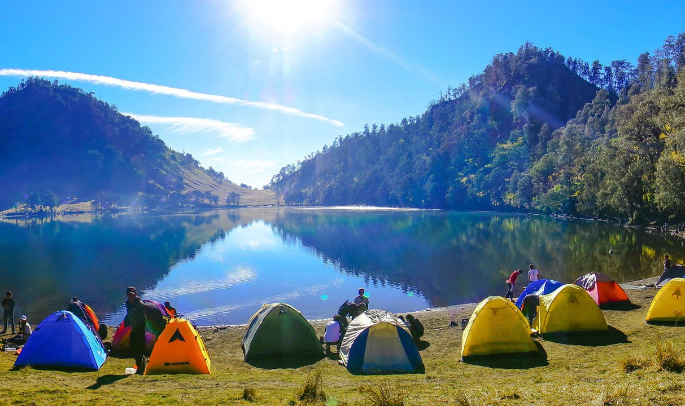
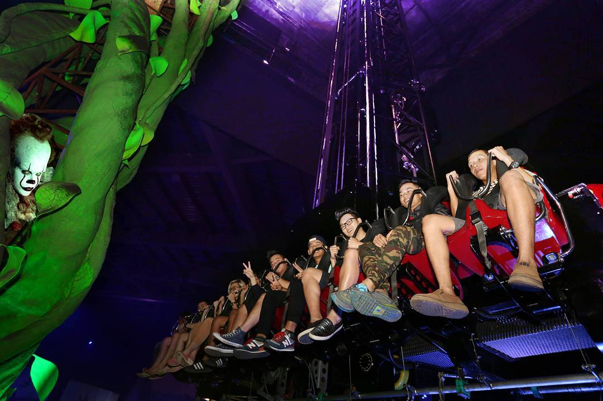

Beach
Sebagai negara kepulauan, Indonesia dianugerahi jutaan
lautan dan pantai yang sangat memesona. Kita sebagai orang
Indonesia, seharusnya bisa menjelajahi keindahan bahari dalam negeri,
sebelum ke luar negeri. Dari sekian banyak pulau yang indah
berikut ini adalah pantai-pantai yang indah dari Indonesia.
Nihiwatu Beach, Sumba, Nusa Tenggara Timur
CNN mengurutkan pantai ini pada nomor 17 pantai terbaik di
dunia! Letaknya tersembunyi di balik sebuah hutan. Pantai
sepanjang 2,5 kilometer ini dianggap sebagai surga yang belum
tersentuh.
Pantai Ora, Maluku Tengah
Pantai ini disebut sebagai Bora-Boranya Indonesia.
Gak perlu jauh-jauh ke Bora-Bora, Polinesia Perancis,
dan Maldives, Maluku Tengah punya pulau yang kalah indah
dari semuanya.
Raja Ampat, Papua Barat

Keindahan Raja Ampat telah kesohor hingga level dunia. Pesonanya
memang luar biasa. Kalau tadi adalah titik barat Indonesia,
Papua menjadi titik timur Indonesia. Sepertinya tak perlu
dijelaskan lagi keindahan tempat ini.
Mountain
Indonesia yang terletak di jalur cincin api membuat Indonesia
salah satu negara yang memiliki gunung terbanyak di dunia.
Setidaknya ada ratusan gunung indah yang tersebar di Wilayah
Indonesia.berikut ini adalah gunung yang memiliki pemandangan
paling indah di Indonesia.
Gunung Bromo, Jawa Timur

Pemerintah Jawa Timur menjadikan Gunung Bromo sebagai salah satu
destinasi wisata unggulan. Tentu saja, penunjukan ini disebabkan karna
Gunung Bromo memiliki pemandangan yang layak untuk dipromosikan
secara luas. Gunung Bromo sendiri selama ini dikenal sebagai salah
satu gunung yang memiliki pemandangan sunsrise yang sangat indah.
Lokasinya berada di kawasan Taman Nasional Bromo Tengger Semeru.
Pemandangan sunrise di Bromo semakin cantik karna kita bisa melihat
rangkaian puncak-puncak gunung di sekitar Taman Nasional Bromo Tengger
Semeru. Gunung Bromo juga dikenal dengan gumul pasirnya yang sangat
luas. Kendaraan jeep serta kuda menjadi pemandangan yang biasa di
Gunung Bromo. Gunung Bromo sendiri memiliki tinggi 2.329 mdpl.
Selain pemandangan sunrise serta gumul pasir, Gunung Bromo juga
terkenal dengan kawahnya yang bisa kita capai menggunakan tangga
yang telah disediakan.
Gunung Rinjani, Pulau Lombok di Nusa Tenggara Barat

Gunung Rinjani adalah gunung yang komplit. Ia punya padang sabana
cantik yang ditumbuhi bunda edelweis, ia juga punya pemandangan
sunrise yang menawan. Dari semua keindahan yang ada di Gunung Rinjani,
Danau Segara Anak adalah yang paling dicari. Danau yang berada di
ketinggian 2.000 mdpl ini merupakan permata paling indah di Gunung
Rinjani. Keindahan danau ini juga dapat kita saksikan dari puncak
Rinjani. Yang unik dari Gunung Rinjani adalah keberadaan Gunung
Barujari yang berada di tengah-tengah Danau Segara Anak. Gunung
Barujari adalah gunung yang berada di atas gunung sehingga gunung
ini sering disebut sebagai anaknya Gunung Rinjani.
Gunung Semeru

Gunung Semeru merupakan gunung paling indah sekaligus paling tinggi
di Pulau Jawa. Gunung ini telah menjadi legenda sejak lama. Mulai
dari jaman Su Hok Gie hingga jamannya pendaki kekinian seperti
sekarang. Keindahan gunung ini tak pernah lekang termakan waktu.
Keindahan gunung ini membuat para pendaki dari berbagai daerah rela
datang jauh-jauh. Gunung Semeru juga merupakan salah satu gunung
paling ramai. Maksimal kuota pendakian yang hanya 500 membuat para
pendaki kadang harus antre di Ranu Pani.
Sama seperti Rinjani, Gunung Semeru juga memiliki permata super
cantik dalam diri Ranu Kumbolo. Sebuah danau alami yang berada pada
ketinggian 2.400 mdpl. Di depan Ranu Kumbolo ada Tanjakan Cinta yang
tidak kalah terkenal di kalangan pendaki. Kemudian ada Oro-oro Ombo
yang ditumbuhi oleh bunga lavender. Dengan semua keindahan yang
dimilikinya, wajar kalau Gunung Semeru menjadi incaran para pendaki
dimanapun berada. Apalagi keindahan gunung ini juga pernah di-film
kan.
Theme Park
Theme Park menjadi salah satu tempat wisata untuk menhabiskan waktu
akhir pekan. Banyak wahana permainan seru yang bisa kamu nikmati
bersama orang terdekat kamu. Selain itu, kamu juga bisa menguji
adrenalin kamu dengan menaiki wahana ekstrem!
Dufan
Lokasinya berada di dalam komplek Taman Impian Jaya Ancol, Jakarta
Utara. Dufan mulai beroperasi sejak 1985 dan menjadi taman hiburan
favorit masyarakat Jakarta! Berbagai wahana permainan bisa kamu
nikmati nih, misalnya Halilintar, Arung Jeram, Bianglala dan lain
sebagainya!
Trans Studio Bandung

Trans Studio Bandung merupakan taman hiburan di dalam ruangan.
Kamu bisa menemukannya di Jalan Gatot Subroto, Bandung.
Tak hanya berbagai wahana permainan yang bisa kamu temukan,
Trans Studio Bandung juga menyajikan berbagai pertunjukan menarik
bagi pengunjung.
Jawa Timur (Jatim) Park, Batu
Taman hiburan ini berada di Kota Batu yang letaknya 20 kilometer
dari pusat Kota Malang!
Gak hanya satu taman hiburan saja, Jatim Park terdiri atas Jatim
Park 1, Jatim Park 2, dan Jatim Park 3 yang akan segera diresmikan.
Konsep masing-masing Jatim Park tersebut berbeda.
Jatim Park 1 lebih banyak wahana permainan pemicu adrenalin dan
menegangkan. Jatim Park 2 punya beragam jenis museum, alam, dan
kebun binatang. Sedangkan yang terbaru, Jatim Park 3 akan menyajikan
museum dinosaurus bagi pengunjung.